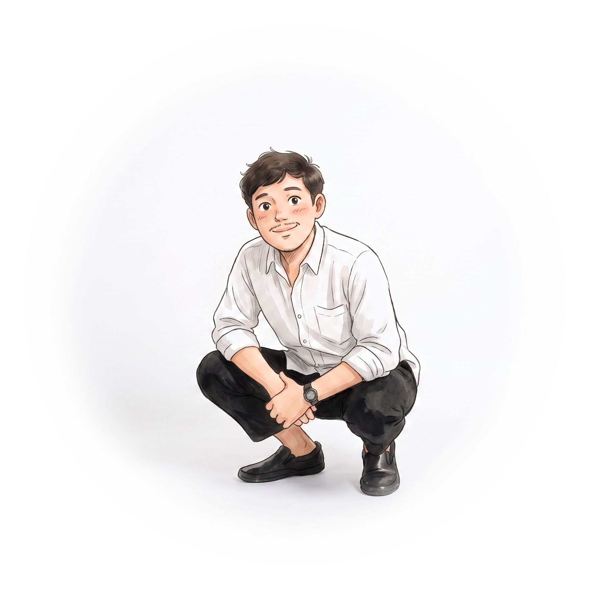

Halo! Nama Saya
Martin Paramarta
Sarjana Komputer lulusan Universitas Sanata Dharma Yogyakarta. Terbiasa bekerja mandiri maupun bersama tim, disiplin waktu, dan berorientasi hasil. Saat ini tertarik mengembangkan karier sebagai Junior Front-end Web Developer, Junior Software Engineer atau bidang terkait.
